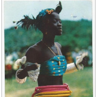
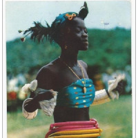
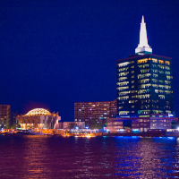
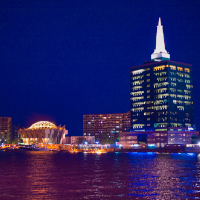

image of the week

Miss nigeria, Edna park - 1964 Miss Universe Pageant

About
Nigeria officially the Federal Republic of Nigeria, is a country in West Africa, bordering Niger in the north, Chad in the northeast, Cameroon in the east, and Benin in the west. Its coast in the south is located on the Gulf of Guinea in the Atlantic Ocean. The federation comprises 36 states and 1 Federal Capital Territory, where the capital, Abuja, is located. The constitution defines Nigeria as a democratic secular state. Nigeria has been home to a number of ancient and indigenous kingdoms and states over the millennia. The modern state originated from British colonial rule beginning in the 19th century, and took its present territorial shape with the merging of the Southern Nigeria Protectorate and Northern Nigeria Protectorate in 1914. The British set up administrative and legal structures while practising indirect rule through traditional chiefdoms. Nigeria became a formally independent federation in 1960. It experienced a civil war from 1967 to 1970. It thereafter alternated between democratically elected civilian governments and military dictatorships until it achieved a stable democracy in 1999, with the 2011 presidential election considered the first to be reasonably free and fair.
Landmarks


People
Places
 


 



© Nigeria in pictures. All Right Reserverd.